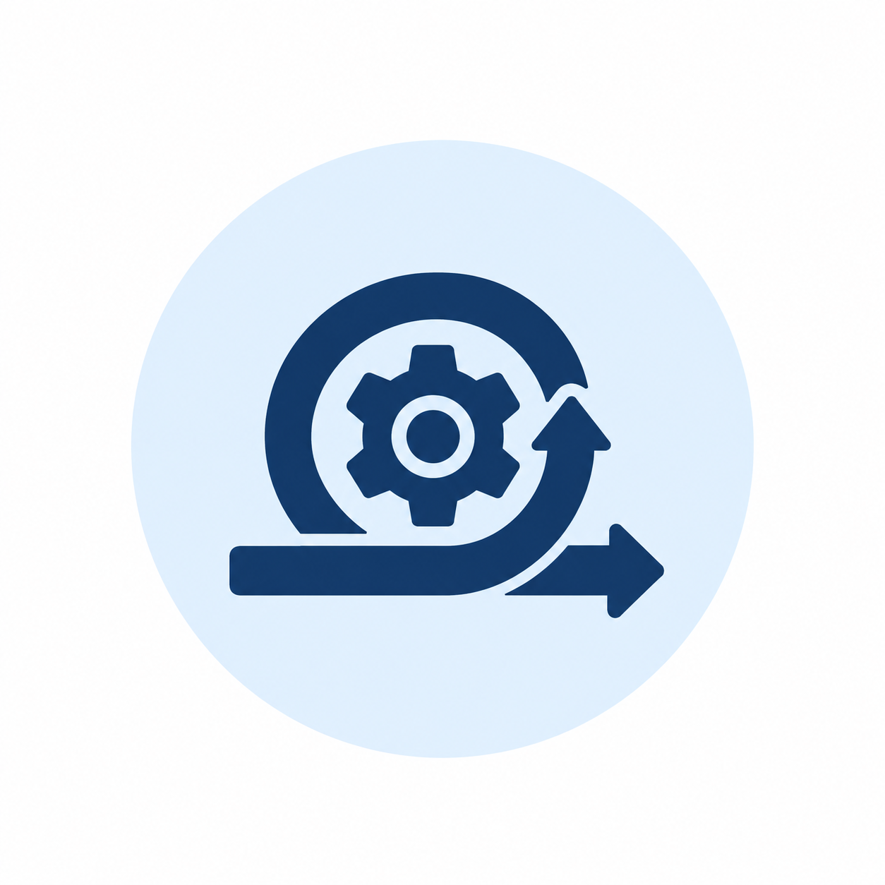

Current Opportunities
Find the right role for you
Explore our current vacancies and take the next step in your career with Data Source.

DevOps Engineer
Your new role
As a DevOps Engineer, you will help manage secure infrastructure and networks while improving the way software is tested and deployed. The role supports cloud-hosted business services and promotes consistent operational practices across development, infrastructure and security teams.
Reports to: Cloud Infrastructure Manager
Key Responsibilities
- Manage infrastructure and networks in compliance with security guidelines and frameworks.
- Design tools and infrastructure that support reliable business systems.
- Automate software testing and deployment processes.
- Administer system hardware, operating systems, software systems and related procedures.
- Collaborate with cross-functional stakeholders and monitor the quality of implementation work undertaken by contractors and service providers.
Essential Requirements
To succeed in this role, you will need:
- Proven experience in the administration of applications, web and middleware environments across Windows, Solaris (Unix) and Linux operating systems admin, VMR and networking, MongoDB/MSSQL, AWS system admin.
- Prior experience in providing 2nd and 3rd Level support with high level problem diagnosis and resolution skills.
- Proven experience / knowledge of IT Security.
- Solid understanding of AWS and web-service, event driven interfaces.
Preferable Requirements
- Exposure to infrastructure-as-code and continuous integration or deployment tools.
- Experience working with external contractors or technology service providers.
What We Offer
Get ready to kick-start your DevOps Engineer journey within an established organisation, in a modern and spacious workspace that offers:
- A flexible and supportive work environment.
- Diverse and Inclusive work environment.
- Experience across various technologies with continuous learning and career progression.
IT Technical Support Engineer (Junior)
Your new role
This role is for someone who is looking to start their career after finishing university or with 1-2 years' experience. We are looking for someone who is personable, technically minded and a team player. You will provide first-line assistance to users, maintain accurate support records and help resolve routine access, device, software and connectivity issues.
Reports to: Technical Support Team Leader
Accountabilities
Key responsibilities include:
- Support the site setup process through tasking coordinated by Technical teams, Team Leader and Site Setup Coordinator teams.
- General server maintenance, administration, and basic networking activities.
- Troubleshoots user account issues including password and access issues.
- Diagnose incidents/problems through discussions with users and participates in functional problem solving groups as required.
- Update internal support documentation and contribute to the development of user help documentation.
Essential Requirements
- Excellent verbal and written communication skills, including the ability to listen and understand what users describe.
- Basic knowledge of server maintenance, operating systems and networking concepts.
- The ability to troubleshoot user accounts and common hardware or software problems.
- Attention to detail when recording support requests and communicating with colleagues.
Preferable Requirements
- A completed or near-completed qualification in information technology or a related field.
- One to two years of experience in an IT support or service desk environment.
- Familiarity with ticketing systems and the preparation of user support documentation.